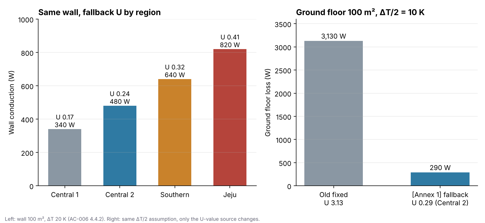

설계 초기에 후배가 이렇게 묻습니다. “건축 단열검토서가 아직 안 나왔는데, 외벽 U값은 예전 프로젝트에서 쓰던 0.24를 그대로 넣으면 되죠?” 현장이 서울이면 우연히 맞습니다. 부산이면 틀립니다. 오늘은 U값을 어디서 받고, 받기 전에는 무엇을 넣고, 무엇과 섞지 말아야 하는지 정리하겠습니다.
지난 글에서 외피 전도부하는 U × A × ΔT로 계산한다고 했습니다(AC-005 부하계산 방법). 오늘은 그 식의 U 하나만 봅니다.
먼저 결론부터 말씀드릴게요
- 외벽·지붕·창·최하층 바닥의 U값은 건축 단열검토서의 실제 값이 1순위입니다. U값은 기계가 만드는 값이 아니라 건축에서 받는 값입니다.
- 단열검토서를 아직 못 받았으면 「건축물의 에너지절약설계기준」 [별표 1]의 해당 지역·부위 값을 임시로 넣습니다. 이걸 fallback이라고 부릅니다.
- fallback을 썼다면 계산서에 “단열검토서 미제공 — [별표 1] 기준값 적용”이라고 적습니다.
- 공장·발전소·업무시설은 공동주택 외 값을 씁니다.
- 일반 내벽 대표값이나 접지바닥 ΔT/2 같은 계산 단순화는 법규 U값과 섞지 않고 부하계산 방법(AC-005)에서 따로 관리합니다.
현행 기준은 [시행 2026. 7. 8.] [국토교통부고시 제2026-360호]입니다. 프로젝트를 시작할 때 다시 확인합니다.
U값이란
U값은 면적 1㎡, 양쪽 온도차 1K일 때 통과하는 열(W)입니다. 단위는 W/(㎡·K)이고, 작을수록 단열이 좋습니다. ΔT는 양쪽 온도차(K)입니다. 둘은 서로 바꿔 쓸 수 있는 값이 아니라 곱해지는 값입니다.
단열검토서를 못 받았을 때 넣는 값
공동주택 외, 외기에 직접 면하는 경우의 [별표 1] 값입니다.
| 지역 | 외벽 | 지붕 | 창 |
|---|---|---|---|
| 중부1 | 0.170 | 0.150 | 1.300 |
| 중부2 | 0.240 | 0.150 | 1.500 |
| 남부 | 0.320 | 0.180 | 1.800 |
| 제주도 | 0.410 | 0.250 | 2.200 |
(단위: W/㎡·K)
최하층 거실 바닥도 [별표 1]이 직접 정합니다. 일반적인 땅에 닿은 비바닥난방 바닥은 “외기에 간접 면하는 경우”, 필로티처럼 아래가 바깥인 바닥은 “외기에 직접 면하는 경우” 값을 씁니다.
| 바닥 조건 (비바닥난방) | 중부1 | 중부2 | 남부 | 제주도 |
|---|---|---|---|---|
| 외기에 간접 (땅에 닿은 바닥) | 0.240 | 0.290 | 0.350 | 0.470 |
| 외기에 직접 (필로티 등) | 0.170 | 0.200 | 0.250 | 0.330 |
바닥난방이면 각각 한 칸씩 더 엄격한 값(간접 0.210·0.240·0.310·0.410, 직접 0.150·0.170·0.220·0.290)을 씁니다.
지역을 잘못 고르면 생기는 일
지역 구분은 [별표 1]이 정합니다. 몇 개만 예로 들면 이렇습니다.
- 중부1: 강원(고성·속초·양양·강릉·동해·삼척 제외), 경기 연천·포천·가평·남양주·의정부·양주·동두천·파주, 충북 제천, 경북 봉화·청송
- 중부2: 서울·대전·세종·인천, 강원 동해안 6개 시군, 경기(중부1 제외), 충북(제천 제외), 충남, 전북, 경북 일부, 경남 거창·함양, 대구 군위
- 남부: 부산, 대구(군위 제외), 울산, 광주, 전남, 경북 울진·영덕·포항·경주·청도·경산, 경남(거창·함양 제외)
- 제주도: 제주특별자치도
같은 강원도라도 춘천은 중부1, 강릉은 중부2입니다. 같은 대구라도 군위만 중부2입니다.

부산 현장에 서울에서 쓰던 0.240을 넣으면, 남부 기준 0.320보다 단열을 25% 좋게 가정하는 셈입니다. 외벽 열손실이 작게 계산되고, 난방부하가 안전측이 아니게 됩니다. 그래서 프로젝트 지역과 U값을 자동으로 연결하는 건 편의 기능이 아니라 입력 오류를 막는 장치입니다.
[별표 1] 값은 실제 건물 U값이 아닙니다
[별표 1]의 중부2 외벽 0.240은 “0.240 이하로 하라”는 상한입니다. 실제 건축 설계는 0.220, 0.200, 0.180처럼 더 좋게 나올 수 있습니다. 그래서 단열검토서를 받았다면 [별표 1] 값으로 다시 덮어쓰지 않습니다. fallback만 계속 쓰면 건축 도면, 에너지절약계획서 건축부문, 기계 부하계산서의 U값이 서로 어긋납니다.
순서는 이렇습니다.
- 건축 단열검토서 실제 값
- 없으면 프로젝트 위치와 부위 조건 확인
- [별표 1] fallback 적용
- 계산서에 fallback 사용 사실 기록
- 최종 단열검토서를 받으면 값 비교 → U값 갱신 → 부하계산 다시 실행
fallback은 모든 부하를 같은 방향으로 바꾸지도 않습니다. 중부2에서 예전 대표값과 비교하면 지붕은 0.110 → 0.150으로 36% 커지고, 창은 2.10 → 1.50으로 29% 작아집니다.
법규 U값과 계산 단순화를 섞지 않습니다
부하계산서에는 법규 U값이 아닌 숫자도 들어갑니다. 대표적인 게 두 개입니다.
일반 내벽 U = 2.08. 공조실과 비공조실 사이 벽의 건축 정보가 없을 때 쓰는 사내 대표값입니다. 법규 열관류율이 아닙니다. 다만 그 벽이 법규상 “외기에 간접 면하는 거실의 외벽”이면 일반 내벽이 아니라 단열검토서나 [별표 1]의 외기간접 값(중부2 외벽 0.340 등)을 씁니다.
접지바닥 ΔT/2. 땅속 온도를 실내외 온도차의 절반으로 단순화한 사내 가정입니다. 여기서 흔한 오해가 있습니다. ΔT/2를 쓴다고 U가 필요 없는 게 아닙니다.
Q = U × A × (ΔT/2)
중부2 땅에 닿은 비바닥난방 바닥 100㎡, ΔT 20K라면 0.290 × 100 × 10 = 290W입니다. 0.290은 바닥 구조의 단열성능이고, 10K는 이번에 가정한 유효 온도차입니다. U값의 출처(AC-006)와 열전달 계산 방법(AC-005)을 분리해두는 이유입니다.
예전에는 접지바닥에 U = 3.13을 고정해서 쓰기도 했습니다. [별표 1] fallback 0.290과 10배 넘게 차이가 납니다. 이건 숫자 하나 고칠 문제가 아니라 “3.13이 어떤 열전달 모델에서 나온 값인가”의 문제입니다. 출처를 설명할 수 없어서, 기준서는 U값을 [별표 1]로 두고 ΔT/2의 적정성은 AC-005에서 따로 검토하기로 했습니다.
단열을 안 해도 되는 부위는 확인부터
제6조제1호가목은 단열조치를 생략할 수 있는 부위를 정합니다. 부하계산과 관련이 큰 것은 이렇습니다.
- 지표면 아래 2m를 넘는 지하 부위 (공동주택 거실 제외, 이중벽 등 결로 방지조치를 한 경우). 지하벽과 바닥의 접합부가 아니라, 2m보다 깊은 지하 부위 자체에 대한 예외입니다.
- 땅에 닿은 바닥 중 외벽 안쪽 면까지 모든 수평거리가 10m를 넘는 부분. 대형 건물 한가운데 바닥입니다.
- 외기에 간접 면하는 부위로, 그 부위가 면한 비난방공간의 바깥 외피를 [별표 1]에 준해 단열한 경우
예외는 “단열이 없다”는 뜻이 아니라 “법적으로 생략할 수 있다”는 뜻입니다. 그래서 이런 부위에 [별표 1] fallback을 기계적으로 넣지 않고, 건축의 실제 단열 구성을 확인합니다.
제가 U값을 검토하는 순서
- 건축 단열검토서를 요청했는가? 받았다면 그 값을 넣었는가?
- 못 받았다면 fallback 사용 사실을 계산서에 적었는가?
- 프로젝트의 단열 지역구분이 맞는가? (춘천과 강릉, 대구와 군위처럼 같은 도 안에서도 갈림)
- 공동주택 / 공동주택 외, 외기 직접 / 간접을 구분했는가?
- 땅에 닿은 바닥과 필로티 바닥을 구분했는가?
- 단열조치 예외 부위가 있는지 건축과 확인했는가?
- 일반 내벽과 외기에 간접 면하는 거실 외벽을 구분했는가?
- 창 U값이 창틀을 포함한 전체 창의 값인가?
- 최종 단열검토서를 받은 뒤 부하계산을 다시 돌렸는가? 에너지절약계획서 건축부문과 값이 같은가?
발주처가 “이 U값은 어디서 나왔냐”고 물으면 이렇게 설명합니다.
“외피 열관류율은 건축 단열검토서의 실제 설계값을 우선 적용합니다. 설계 초기에 단열검토서가 없으면 「건축물의 에너지절약설계기준」 [별표 1]의 해당 지역·부위 기준값을 임시로 적용하고 계산서에 그 사실을 적습니다. 일반 내벽 대표값이나 접지바닥 ΔT/2는 법규 U값이 아니라 초기 부하계산을 단순화하기 위한 사내 가정으로 따로 관리합니다. 최종 U값을 받으면 부하계산을 업데이트해 건축 도면, 에너지절약계획서, 기계 부하계산서를 일치시킵니다.”
앱에서 확인해보세요
HVAC 부하·용량 계산서 앱은 지역을 고르면 [별표 1] 지역구분이 정해지고, 새로 만드는 실의 외벽·지붕·창·바닥 U값에 그 지역의 fallback이 들어갑니다. 단열검토서 값이 나오면 칸에 직접 덮어쓰면 됩니다.
이번 주에 대조하다 보니, 실을 만든 뒤 지역을 바꾸면 이미 만든 실의 U값이 이전 지역 값으로 남아 있었습니다. 서울에서 시작해 부산으로 바꾼 프로젝트라면 위에서 본 “부산에 0.240” 실수가 그대로 일어나는 구조였습니다. 지금은 사용자가 손대지 않은 fallback 값만 새 지역 값으로 바뀌고, 단열검토서 값을 직접 넣은 칸은 그대로 둡니다. 무엇을 바꾸고 무엇을 남겼는지는 이번 주 개발 기록에 적었습니다.
서울에서 실 하나를 만들고 지역을 부산으로 바꿔보세요. 외벽 U값이 0.240에서 0.320으로 바뀌는 걸 확인할 수 있습니다.
👉 HVAC 부하·용량 계산서 써보기 · 앱 소개 보기
관련 기준: 국내 외기조건 AC-001, 부하계산 방법 AC-005, 법정최소와 설계채택 AC-019. 외부 기준: 「건축물의 에너지절약설계기준」 [시행 2026. 7. 8.] [국토교통부고시 제2026-360호] 제6조·[별표 1], 건축 단열검토서, 에너지절약계획서 건축부문.